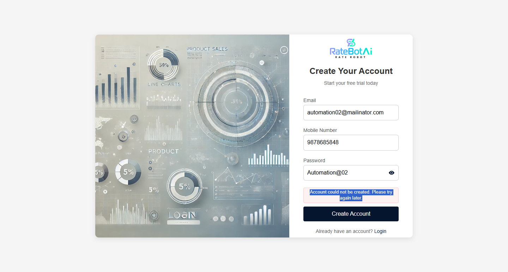

-
BMS Start to End Workflow Happypath
7:35:37 pm / 00:00:23:794 Fail
BMS Start to End Workflow Happypath
02.03.2026 7:35:37 pm 02.03.2026 7:36:01 pm 00:00:23:794 · #test-id=1FailVerify all pages are working correctlyGiven the user signs up for the BMS applicationhooks.Hooks.addScreenshot(io.cucumber.java.Scenario)Failed Screenshot
When the user verifies the account via emailStep skippedAnd user logs into the BMS applicationStep skippedThen user is on the Channel Manager pageStep skippedWhen user navigates to My Properties pageStep skippedWhen user navigates to My Profile pageStep skippedAnd user clicks on Edit ProfileStep skippedAnd user updates profile detailsStep skippedAnd user clicks on Save ChangesStep skippedThen user navigates back from the profile pageStep skippedThen user is on the Basic Info pageStep skippedAnd user enters the property detailsStep skippedAnd user submits the property informationStep skippedThen user is on the Contacts pageStep skippedAnd user updates contact detailsStep skippedAnd user saves the Contact detailsStep skippedThen user is on the Location pageStep skippedAnd user updates location detailsStep skippedAnd user saves the Location detailsStep skippedWhen user navigates to Rooms pageStep skippedThen user is on the Rooms pageStep skippedAnd user enters valid room detailsStep skippedThen user creates the roomStep skippedWhen user enters valid rate plan detailsStep skippedThen user creates the rate planStep skippedWhen user navigates to Photos and Videos pageStep skippedThen user is on the Photos and Videos pageStep skippedAnd user uploads cover photoStep skippedThen user clicks on save photos buttonStep skippedWhen user uploads room photo and select roomStep skippedThen user clicks on save photos buttonStep skippedWhen user deletes uploaded room photoStep skippedAnd user deletes uploaded cover photoStep skippedWhen user navigates to Rate and Inventory pageStep skippedThen user is on the Rate and Inventory pageStep skippedAnd user opens all rooms rate plansStep skippedWhen user closes a single room rate planStep skippedAnd user opens the single room rate planStep skippedWhen user clicks on bulk updateStep skippedAnd user updates inventory detailsStep skippedAnd user updates rate detailsStep skippedWhen user selects a date from the calendarStep skippedAnd user navigates to previous calender chartStep skippedAnd user navigates to next calender chartStep skippedThen user close all rooms rate plansStep skippedWhen user navigates to Cancellation Policy pageStep skippedThen user is on the Cancellation Policy pageStep skippedAnd user creates a simple cancellation policyStep skippedAnd user deletes simple cancellation policyStep skippedThen user creates a custom cancellation policyStep skippedAnd user deletes custom cancellation policyStep skippedWhen user navigates to Payment Policy pageStep skippedThen user is on the Payment Policy pageStep skippedAnd user creates payment policyStep skippedThen user deletes payment policyStep skippedWhen user navigates to Discounts pageStep skippedThen user is on the Discounts pageStep skippedAnd user creates a discountStep skippedThen user deletes the discountStep skippedWhen user navigates to Email Configuration pageStep skippedThen user is on the Email Configuration pageStep skippedAnd user updates email configuration detailsStep skippedAnd user clicks on update email configuration buttonStep skippedWhen user navigates to Payment Gateway pageStep skippedThen user is on the Payment Gateway pageStep skippedWhen user navigates to Hotel Logo pageStep skippedThen user is on the Hotel Logo pageStep skippedAnd user uploads hotel logoStep skippedAnd user clicks on submit hotel logo buttonStep skippedWhen user navigates to Channel Manager pageStep skippedThen user is on the Channel Manager pageStep skippedAnd user connects the channel managerStep skippedThen user clicks on reveal secret codeStep skippedAnd user disconnects the channel managerStep skippedWhen user navigates to Bookings pageStep skippedThen user is on the Bookings pageStep skippedAnd user selects from date and to dateStep skippedWhen user selects booking status as confirmedStep skippedAnd user clicks on WhatsApp connect to contact customerStep skippedWhen user selects booking status as cancelledStep skippedAnd user clicks on WhatsApp connect to contact customerStep skippedWhen user selects booking filter as check-inStep skippedAnd user selects booking filter as check-outStep skippedWhen user logs out from the BMS applicationStep skippedThen user is on the login pageStep skipped
-
org.openqa.selenium.TimeoutException
1 tests
org.openqa.selenium.TimeoutException
1 failedStatus Timestamp TestName Fail 19:35:39 pm Given the user signs up for the BMS application BMS Start to End Workflow Happypath.Verify all pages are working correctly.Given the user signs up for the BMS application
Started
03-02-2026 19:35:36
Ended
03-02-2026 19:36:01
Features Passed
0
Features Failed
1
Features
Scenarios
Steps
Timeline